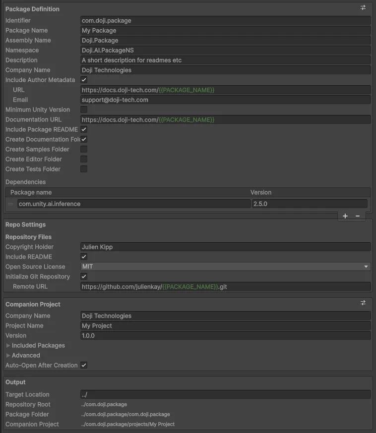
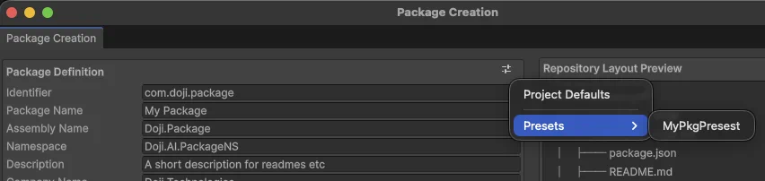
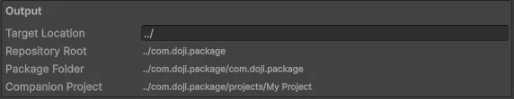

Package Creation Wizard
The package creation wizard is the main entry point for generating a reusable package repository.
Open it from Window > Package Authoring > Create Package....

What The Wizard Produces
The wizard creates a repository root named after the package identifier and then fills it with:
- a package folder whose name matches the package identifier
- a companion Unity project under
projects/<Project Name> - repository root files such as
README.md,LICENSE, and optionallyAGENTS.md - optional package folders such as
Editor,Samples~,Tests, and repository-leveldocs
When enabled, the wizard also initializes a git repository and can assign an origin remote URL.
A generated repository includes the package itself, repository support files, and a companion Unity project for development and validation.
What You Decide In The Window
The window is organized into four editable sections and a live preview:

Package Definitioncontrols the package manifest and package-owned folders.Repo Settingscontrols repository-level files such as the license and root README.Companion Projectcontrols the generated Unity project that references the local package.Outputshows the resolved filesystem paths.Repository Layout Previewshows the generated repository structure and reacts to the field you hover in the form.
Field-by-field behavior is covered in Package Creation Wizard Settings.
How The Generation Flow Works
The package definition and repository settings determine what is generated under the repository root and package folder. The companion-project section then creates a Unity project that starts from the template project's baseline and points back to the generated local package.
In practice, the wizard does the following:
- Creates the repository root, package root, and companion-project root.
- Optionally creates the DocFX documentation scaffold under
docs/. - Creates the package runtime structure and any optional package folders.
- Writes package metadata such as
package.json,README.md, andCHANGELOG.md. - Copies the baseline Unity project into the companion project and patches its settings and manifest.
- Writes repository-level files such as
LICENSE,README.md, andAGENTS.md. - Optionally runs git initialization and creates the initial commit.
- Optionally opens the generated companion project in the current Unity editor.
What The Repository Contains
The generated output is easiest to think about in three ownership layers: package, repository, and companion project.
Package-Owned Output
The generated package always includes:
Runtime/Runtime/<Assembly Name>.asmdefRuntime/AssemblyInfo.cspackage.jsonCHANGELOG.md
Depending on your toggles, it can also include:
README.mdEditor/Editor/<Assembly Name>.Editor.asmdefSamples~/Samples~/<Assembly Name>.asmdefSamples~/00-SharedSampleAssets/Samples~/01-BasicSample/BasicSample.csTests/
Repository-Owned Output
The repository root can include:
README.mdLICENSEAGENTS.mddocs/.git/after initialization
The docs/ scaffold contains the DocFX configuration, root pages, API landing page, and DocFX table-of-contents files described in Templates.
Companion Project Output
The companion project is written under projects/<Project Name>.
It is built from the template project's baseline assets, packages, and project settings, then patched with:
- the current company name
- the current project name
- the current version
- the selected preferred editor integration package
- any extra included packages
- a local file reference to the generated package
- the package as a
testablepackage when the packageTestsfolder is enabled
Preset Buttons
The package creation wizard has two preset scopes:

- the
Package Definitionpreset button applies package and repository values - the
Companion Projectpreset button applies project-facing values
The package and repository side can change independently from the companion-project side, so the wizard keeps those preset scopes separate.
You can either apply Project Defaults or custom Presets:

Output Preview
The Output section shows the resolved paths derived from the current settings:

- target location
- repository root
- package folder
- companion project folder
The preview updates as you type and catches naming mistakes before generation, especially when the package identifier or project name drives multiple folder paths.
Before You Click Create Package
Check these decisions before generation:
- the package identifier is final, because it becomes both the repository folder name and the package folder name
- the assembly name and namespace match your long-term code organization
- the companion project name is suitable for the generated
projects/folder - the optional folders reflect what you actually intend to ship or maintain
- the repository URL, if used, resolves correctly after token replacement
Field-by-field behavior is covered in Wizard Settings.